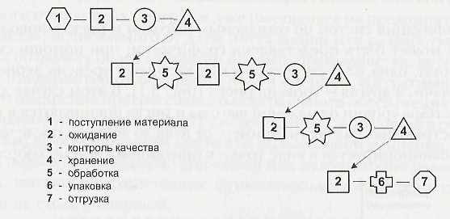
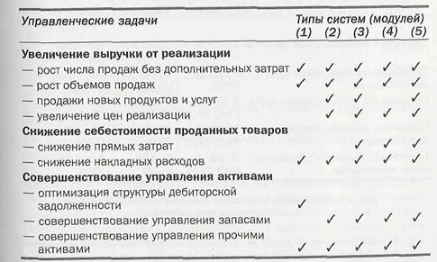

Можно выделить четыре главных фактора, обусловливающих экономическую эффективность ERP-проектов:
Если предположить, что компания располагает неограниченными финансовыми возможностями, первые три задачи могут быть решены без особых проблем. В то же время четвертая задача — улучшение использования активов — это именно та область, в которой при желании можно обнаружить огромное количество скрытых резервов и возможностей.
Основной подход к выявлению скрытых резервов — идентификация тех стадий производственного процесса, которые не повышают ценности конечного продукта (напомним, что именно этот принцип лежит в основе управленческой философии Точно вовремя). Проиллюстрируем сказанное на простом примере, описывающем поступление материала па предприятие, его двухфазную обработку и складирование готовой продукции (рис. 2).
 |
Для того чтобы обосновать инвестиции, постараемся определить, на каких участках происходят задержки и где ресурсы используются непродуктивно. Именно эти области — объект особого внимания при внедрении новой системы или реорганизации бизнеса. Такая схема также помогает выявить операции, не создающие потребительной стоимости продукта.
Как легко убедиться, глядя на схему, здесь присутствуют всего лишь три операции, создающие потребительную стоимость. Впрочем, для реальной жизни такая ситуация не столь типична, — этот пример лишь показывает, что даже несложная схема помогает выявить места избыточного расхода ресурсов и задержки материальных потоков. Кроме того, становится возможным разбить производственные процессы и операции, не создающие потребительную стоимость, на две категории:
Особое внимание следует обратить на операции и процессы второго вида, поскольку
именно они тормозят ход производственного процесса и приводят к нерациональному
использованию ресурсов. Именно эти операции и процессы должны быть, по возможности,
реорганизованы при внедрении повой системы. Результат такой реорганизации должен
выразиться в повышении продуктивности использования ресурсов (материальных,
трудовых, финансовых), снижении затрат, повышении качества обслуживания, росте
доходности и рентабельности.
Изложенный принцип применим для всех видов бизнеса, независимо от форм движения
материальных потоков. Если рассмотреть его более детально (применительно к предприятиям
промышленного производства), то можно выявить конкретные области влияния различных
информационных систем (модулей). Для этого управленческие системы (модули) можно
подразделить на пять категорий, в соответствии с их функциональностью:
Влияние перечисленных систем на качество управления производственным предприятием можно проиллюстрировать в табличной форме (рис. 3).
 |
Несколько лет назад одной из консалтинговых компаний был проведен анализ результатов внедрения систем, поддерживающих методологию MRP II. В ходе обследования более двухсот компаний, завершивших свои внедрения, были выявлены следующие результаты: